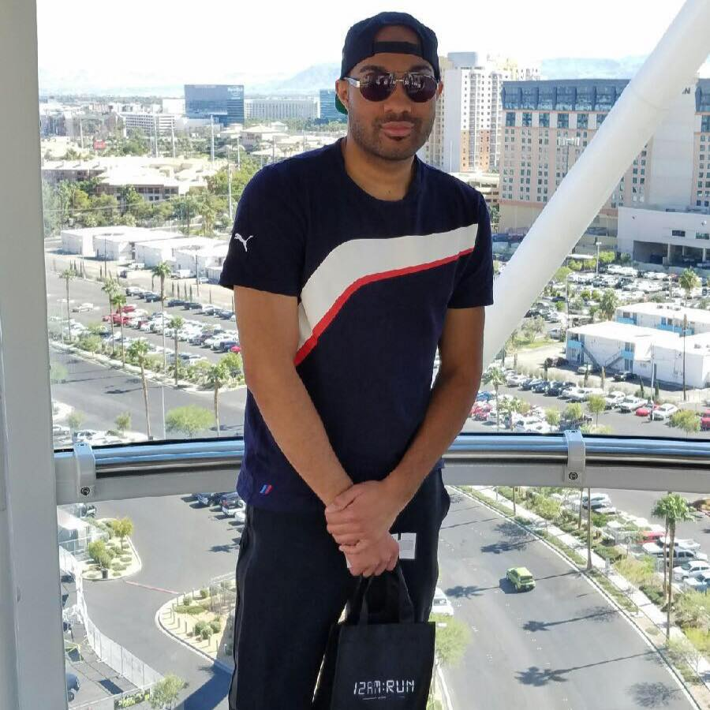

About Me

I'm an active free lance graphic designer. I own several "grass-root” online businesses and I’m an avid social media user and influencer. I use to be a molecular technologist, but quit due to professional disagreements and boredom. I often ask myself how does one quit a job they committed most of their 20s to secure but that’s life. After ditching my job I fully committed to my businesses. The year of my new career path was rough! During that journey of entrepreneurship I realized that web design and software development are essential because not only were my clients asking me to program websites for them, I also needed the skills to build a custom website for my businesses. Despite having experience with template web building platforms like WIX and Squarespace, I realized the things I wanted and what my customers wanted was intricate. Then and there I knew this was something I couldn’t ignore learning.
On another note, when I was younger, I was always fascinated with hacking my game consols to unlock its full potential. I eventually did small time (emphasis on small) coding for a video game start-up that used scripts and I remembered loving it. Soon other obligations like college and life pulled me away from resuming that hobby. Here I am as an entrepreneur who has not been active in that world for over a decade and not having a solid avenue to get back into coding I felt helpless until the day I heard that my cousin landed a big job coding for a company in New York. She shared the same job path as as me but altered from a bio lab to coding in under a year. It seemed like the universe timed this right because after a conversation with her about educational programs for coding and researched it, I discovered Rutgers was offering an accelerated program for it. This was a perfect opportunity because not only did my situation call for it but I realized that I have spent most of my life in font of a computer, so I definitely have a passion for them! Coding and software development is right up my ally, which I have recently discovered is a secret passion of mine. Now here I am a novice coder hungry to learn and sitting in one of the colleges I dreamed of going to since high school!